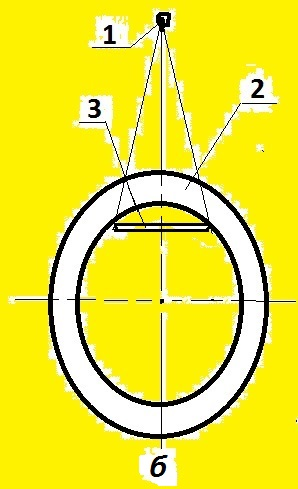
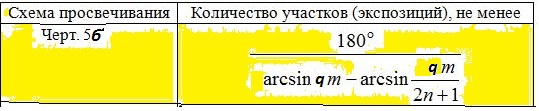

4.9. При выборе схемы и направления излучения сле-
дует учитывать: расстояние L от контролируемого свар-
ного соединения до радиографической пленки должно
быть минимальным и в любом случае не превышать 150
мм.
Согласно ГОСТ 7512 (ПРИЛОЖЕНИЕ 4 п.4) для схемы
черт.5б:
- выбирают длину (l) снимка и f-расстояние, которые
должны удовлетворять соотношениям: l меньше dвн; f больше f_min;
- определяют вспомогательный коэффициент q и q0.
Если не выполняется соотношение q меньше q0, то уменьшают
l или увеличивают f до выполнения этого соотношения,
после чего выбирают количество N контролируемых за
одну экспозицию участков.
Выбрать параметры:
s - радиационная толщина, мм;
D - наружный диаметр контролируемого сварного соединения, мм;
m - отношение внутреннего и наружного диаметров контролируемого сварного
соединения;
Ф - максимальный размер фокусного пятна источника излучения, мм;
K - требуемая чувствительность контроля, мм.
3. Количество участков (экспозиций) при контроле по схемe черт. 5б не дол-
жно быть менее значений, определяемых по формулe, приведенной в п.4 Прило-
жения 4 :

Выберите класс чувствительности по ГОСТ 7512-82
класс чувствител. класс : Выбрать 1, 2 или 3
наружный диаметр D, мм : Выбрать D больше d
внутренний диаметр d, мм : Выбрать d меньше D
усиление шва h, мм : Выбрать h не менее 0 и не более 5 мм
фокусное пятно Ф, мм : Выбрать Ф более 0 и не более 5 мм
размер снимка l, мм : Выбрать длину более 0 и не более d мм
фокус.расстояние f, мм : Выбрать f более 0